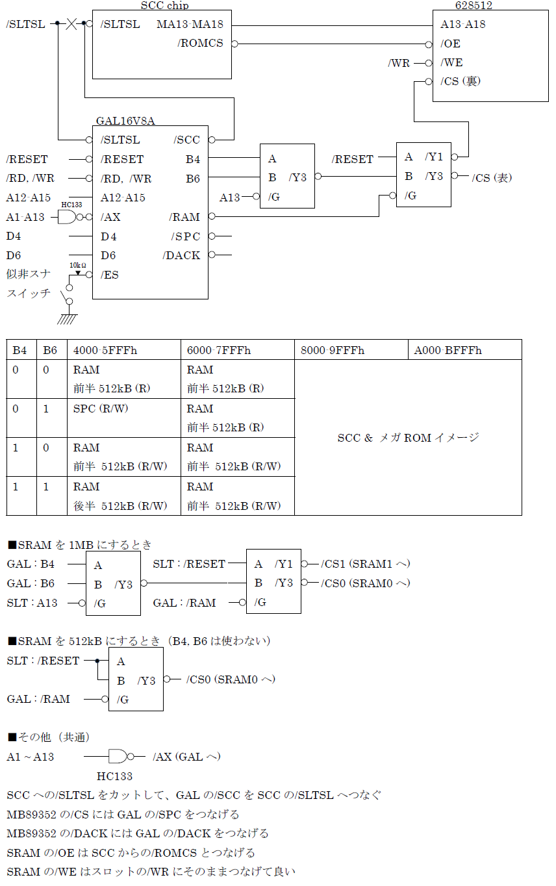

付録３ ＷＡＶＥ−ＳＣＳＩ
うぇ〜ぶ（似非SCC 1024kB版）の元となったWAVE-SCSIについても触れておきます。
元々、WAVE-SCSI用のGALデータが存在しており、私がWAVE-SCSIを作った時もそれを使用しました。当初はそれをそのまま使ってうぇ〜ぶを作る予定でした。ただ、GALデータはテキストベースで部分的に残っているだけでしたので、当初はその復元から開始する羽目になりました。その際、SCSI用の機能を省けばLS139の機能を盛り込むことができ、結果的に普通の似非SCCよりも簡単に作れることに気がつきました。そのため、うぇ〜ぶ用のGALではWAVE-SCSIを作るのは難しくなっています。
せっかくですので、WAVE-SCSIの簡単な回路図とGAL用のJedファイルを載せておきます。
WAVE-SCSI回路

WAVE-SCSI用JEDファイル
 タイトルへ戻る
タイトルへ戻る